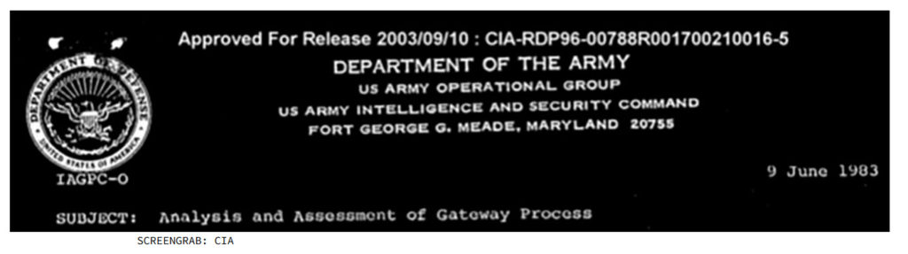
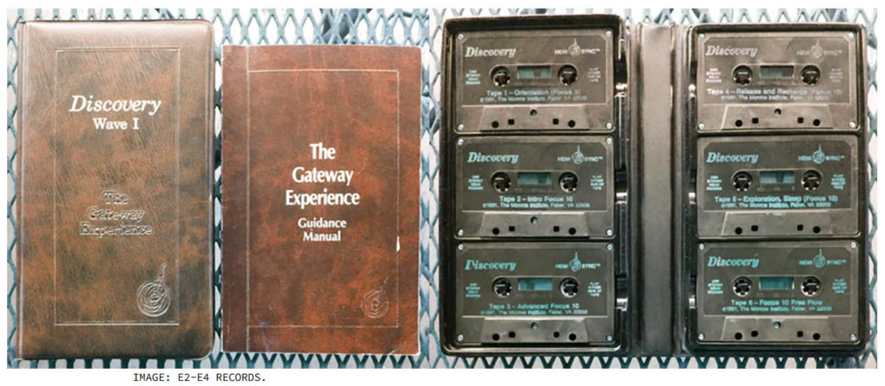
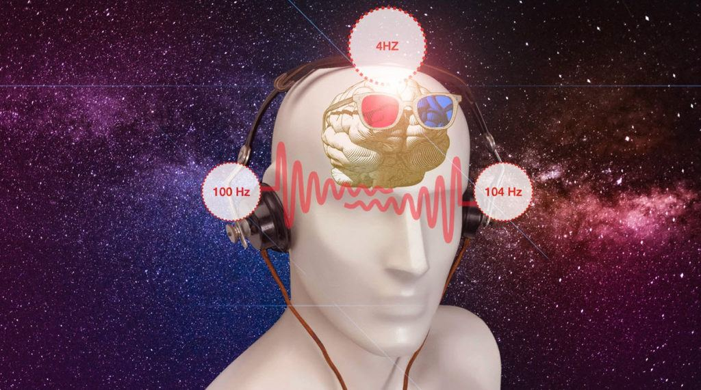
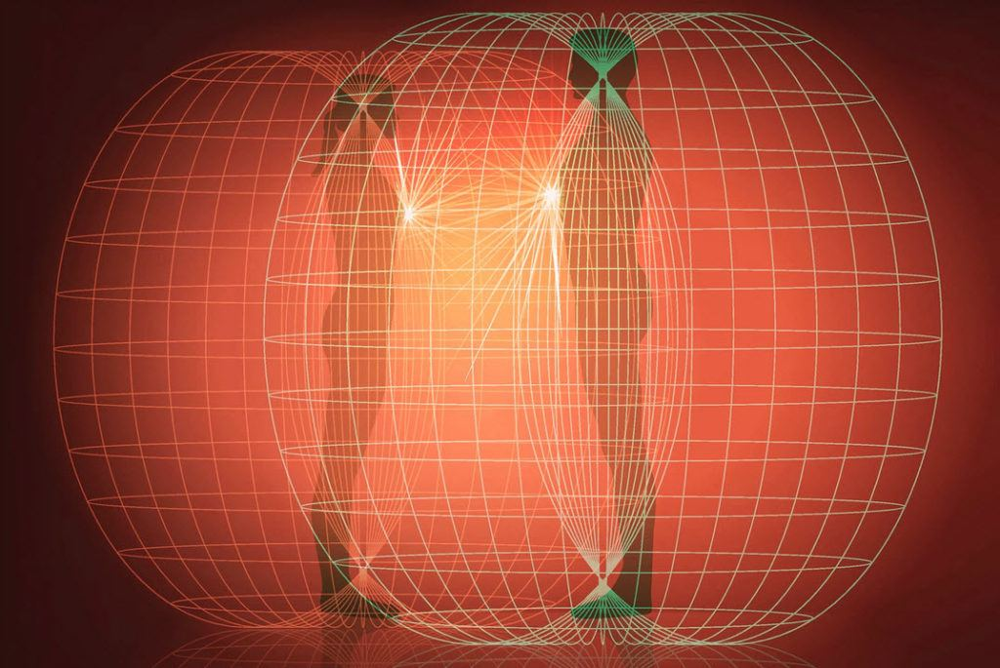
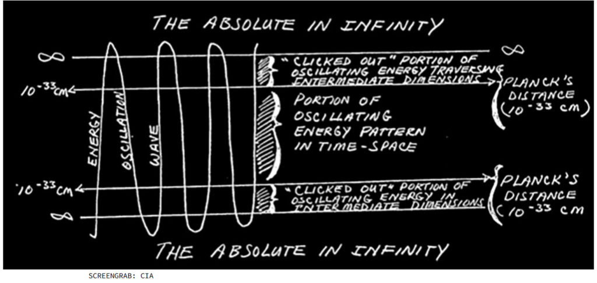
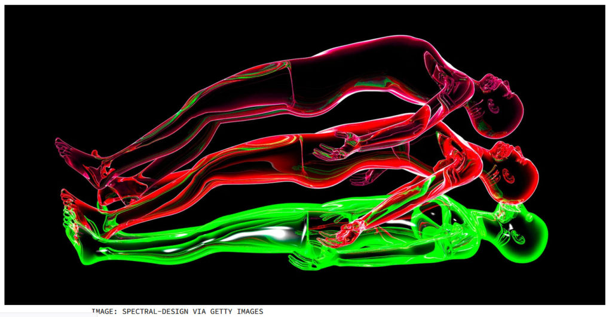
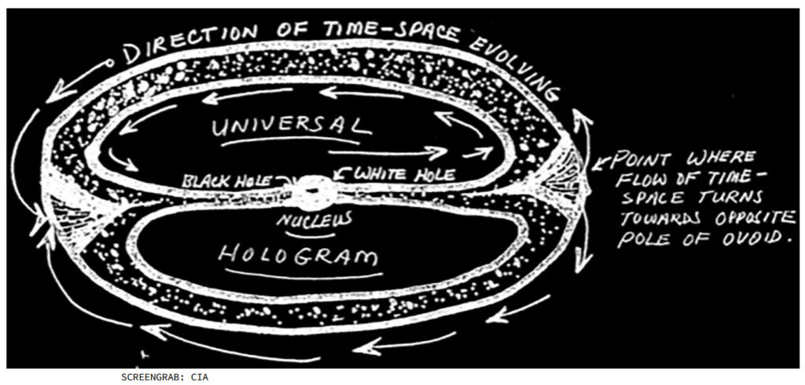

This post serves as an introduction to “Hemi-Sync” or the “Gateway Process”. It is a system that permits the isolation of consciousness from the reality that it inhabits. There have been a flood of articles regarding this process because the CIA declassified it’s use when it was involved in “Remote Viewing” activities. Yet all of the theories, and articles put forth still come associated with the “baggage” of an imperfect understanding of the true and real nature of the universe. Here, we are going to present the techniques alongside the way the universe actually operates.
This post was originally posted on VICE. It was edited to fit this venue and all credit to the author. Note that my comments on the post are highlighted and italicized. Written by Thobey Campion on February 16, 2021, at 11:33pm. The original post is from VICE.
Dear MM reader; don't get too caught up on the CIA, and other things that seem outer-worldly and fantastical. Keep yourself grounded and keep in mind that we are consciousness that inhabits a body within a reality that is constantly changing through our thoughts.
How to Escape the Confines of Time and Space According to the CIA
In the 80s, the spy agency investigated the “Gateway Experience” technique to alter consciousness and ultimately escape spacetime.
Thobey Campion writes...
She turned to me the other morning and said, “You heard of The Gateway?” It didn’t register in the moment. She continued, “It’s blowing up on TikTok.”
Later on, she elaborated: it was not in fact the ill-fated 90s computer hardware company folks were freaking out about. No, they’ve gone further back in time, to find a true treasure of functional media.
The intrigue revolves around a classified 1983 CIA report on a technique called the Gateway Experience. The “Gateway Experience” is a training system designed to focus brainwave output to control one’s consciousness.
As such it can ultimately be used to escape the restrictions of time and space.
- CIA’s Gateway Process Declassified (Part One: The Gateway …
- DECLASSIFIED: CIA Explains Consciousness, The Matrix …
- Analysis and Assessment of the Gateway Process
- The Gateway experience: CIA files | by Tomie Trypt | Medium
- How to Escape the Confines of Time and Space
- CIA Gateway Experience Documents : TFR LIVE : Truth …
The CIA was interested in all sorts of psychic research at the time. This included the theory and applications of remote viewing.
"Remote Viewing" is when someone views real events with only the power of their mind. The documents have since been declassified and are available to view.
This is a comprehensive excavation of The Gateway Process report.
The first section provides a timeline of the key historical developments that led to the CIA’s investigation and subsequent experimentations.
The second section is a review of The Gateway Process report. It opens with a wall of theoretical context, on the other side of which lies enough understanding to begin to grasp the principles underlying the Gateway Experience training.
The last section outlines the Gateway technique itself and the steps that go into achieving spacetime transcendence.
The Timeline
• 1950s – Robert Monroe, a radio broadcasting executive, begins producing evidence that specific sound patterns have identifiable effects on human capabilities. These include alertness, sleepiness, and expanded states of consciousness.
• 1956 – Monroe forms an R&D division inside his radio program production corporation RAM Enterprises. The goal is to study sound’s effect on human consciousness. He was obsessed with “Sleep-Learning,” or hypnopedia, which exposes sleepers to sound recordings to boost memory of previously learned information.Advertisement
• 1958 – While experimenting with Sleep-Learning, Monroe discovers an unusual phenomenon. He describes it as sensations of paralysis and vibration accompanied by bright light. It allegedly happens nine times over the proceeding six weeks, and culminates in an out-of-body experience (OBE).
• 1962 – RAM Enterprises moves to Virginia, and renames itself Monroe Industries. It becomes active in radio station ownership, cable television, and later in the production and sale of audio cassettes. These cassettes contain applied learnings from the corporate research program, which is renamed The Monroe Institute.
• 1971 – Monroe publishes Journeys Out of the Body, a book that is credited with popularizing the term “out-of-body experience.”
• 1972 – A classified report circulates in the U.S. military and intelligence communities. It claims that the Soviet Union is pouring money into research involving ESP and psychokinesis for espionage purposes.
• 1975 – Monroe registers the first of several patents concerning audio techniques designed to stimulate brain functions until the left and right hemispheres become synchronized. Monroe dubs the state “Hemi-Sync” (hemispheric synchronization), and claims it could be used to promote mental well-being or to trigger an altered state of consciousness.
- FREE Hemi-Sync Download: Way of Hemi-Sync – Lucid Mind …
- Hemi-Sync Meditation – The Monroe Institute
- How does Hemi-Sync® Compare To Other Products?
- Monroe Hemi-Sync Meditation – domehealingcenter
- Robert Monroe | Psi Encyclopedia
- Robert Monroe – Life and Legacy – Lucid Mind Center
- The Hemi-Sync Process | HemiSync
• 1978 to 1984 – Army veteran Joseph McMoneagle contributes to 450 remote viewing missions under Project Stargate. He is known as “Remote View No. 1”. This is kind of a whole other story.
- Joseph McMoneagle and the Stargate Project
- The Stargate Chronicles: Memoirs of a Psychic Spy, by Joe …
- The CIA Recruited ‘Mind Readers’ to Spy on the Soviets in …
- Joe McMoneagle – Remote Viewing – …
- Stargate Project | Military Wiki
• June 9th, 1983 – The CIA report “Analysis and Assessment of The Gateway Process” is produced. It provides a scientific framework for understanding and expanding human consciousness, out-of-body experiments, and other altered states of mind.
• 1989 – Remote viewer Angela Dellafiora Ford helps track down a former customs agent who has gone on the run. She pinpoints his location as “Lowell, Wyoming”. U.S. Customs apprehend him 100 miles west of a Wyoming town called Lovell.
- The CIA Recruited ‘Mind Readers’ to Spy on the Soviets
- ESP and Remote Viewing – Part 2 – the MUFON Wiki
- Project Stargate: 10 Facts About the US Government Psychic …
- Meet the Former Pentagon Scientist Who Says Psychics Can …
- ESP and Remote Viewing – Part 3 – the MUFON Wiki
- Remotely Viewed? The Charlie Jordan Case | Skeptical …
- The Stargate Project – Marginal REVOLUTION
- CIA FILES 2021 – U.S. use of ‘Psychic Spies’ – Dangers of …
- John Glenn and Remote Viewing | Remote Viewing / Remote …
- The Fugitive and the Soothsayer – unlimitedhangout.com
- The Truth Is Out There, and the Feds Paid to Find It – The …
- Files About Astral Projection, Parallel Universes And So ..
- Remote Viewing Discussion with Star Gate remote viewer …
- TT* Docunent 35 of 25 for FBIS
- Angela Ford – At the Bay Healing Arts Center
- Conspiracy Unlimited: Following The Truth Wherever It …
• 2003 – The CIA approves declassification of the Gateway Process report.
• 2017 – The CIA declassifies 12 million pages of records revealing previously unknown details about the program, which would eventually become known as Project Stargate.
The Report

Personnel
The author of The Gateway Process report is Lieutenant Colonel Wayne M. McDonnell, hereon referred to simply as Wayne. There isn’t a tremendous amount of information available on the man, nor any photographs.
In 1983, Wayne was tasked by the Commander of the U.S. Army Operational Group with figuring out how The Gateway Experience, astral projection and out-of-body experiences work.
Wayne partnered with a bunch of different folks to produce the report, most notably Itzhak Bentov, a very Googleable American-Israeli scientist who helped pioneer the biomedical engineering industry.
- Analysis and Assessment of the Gateway Process
- CIA’s Gateway Process Declassified (Part One: The Gateway …
- (ebook) Itzhak Bentov – On the Mechanics of Consciousness …
- (pdf) CIA ANALYSIS AND ASSESSMENT OF GATEWAY …
- CIA files – Stargate Collection – Gateway Process …
- ABOVE TOP SECRET, ‘EYES ONLY’: ‘Declassified’, CIA …
- Approved For Release 2003/09/10 : CIA-RDP96 …
A scientific approach
From the outset of the report, Wayne states his intent to employ an objective scientific method in order to understand the Gateway process. The various scientific avenues he takes include:
- A biomedical inquiry to understand the physical aspects of the process.
- Information on quantum mechanics to describe the nature and functioning of human consciousness.
- Theoretical physics to explain the time-space dimension and means by which expanded human consciousness transcends it.
- Classical physics to bring the whole phenomenon of out-of-body states into the language of physical science (and remove the stigma of an occult connotation).
Methodological frames of reference
Before diving into the Gateway Experience, Wayne develops a frame of reference by dissecting three discrete consciousness-altering methodologies.
He’s basically saying, there’s no way you’re going to get through The Gateway without a solid grounding in the brain-altering techniques that came before it.
1) He begins with hypnosis.
The language is extremely dense, but the basic gist is as follows: ..the left side of the brain screens incoming stimuli, categorizing, assessing and assigning meaning to everything through self-cognitive, verbal, and linear reasoning. The left hemisphere then dishes the carefully prepared data to the non-critical, holistic, pattern-oriented right hemisphere, which accepts everything without question. Hypnosis works by putting the left side to sleep, or at least distracting it long enough to allow incoming data directly, unchallenged entry to the right hemisphere. There, stimuli can reach the sensor and motor cortices of the right brain, which corresponds to points in the body. Suggestions then can send electrical signals from the brain to certain parts of the body. Directing these signals appropriately, according to the report, can elicit reactions ranging from left leg numbness to feelings of happiness. Same goes for increased powers of concentration.
2) Wayne continues with a snapshot of transcendental meditation.
He distinguishes it from hypnotism. Through concentration the subject draws energy up the spinal cord, resulting in acoustical waves that run through the cerebral ventricles, to the right hemisphere, where they stimulate the cerebral cortex, run along the homunculus and then to the body. The waves are the altered rhythm of heart sounds, which create sympathetic vibrations in the walls of the fluid-filled cavities of the brain’s ventricles. He observed that the symptoms begin in the left side of the body, confirming the right brain’s complicity. Bentov also states that the same effect might be achieved by prolonged exposure to 4 - 7 Hertz/second acoustical vibrations. He suggests standing by an air conditioning duct might also do the trick. (David Lynch and other celebrities are committed adherents to transcendental meditation today.)
3) Biofeedback, on the other hand, uses the left hemisphere to gain access to the right brain’s lower cerebral, motor, and sensory cortices.
Whereas hypnosis suppresses one side of the brain, and TM bypasses that side altogether, biofeedback teaches the left hemisphere to visualize the desired result, recognize the feelings associated with right hemisphere access, and ultimately achieve the result again. With repetition, the left brain can reliably key into the right brain, and strengthen the pathways so that it can be accessed during a conscious demand mode. A digital thermometer is subsequently placed on a target part of the body. When its temperature increases, objective affirmation is recognized and the state is reinforced. Achieving biofeedback can block pain, enhance feeling, and even suppress tumors, according to the report.

The Gateway mechanics
With that, Wayne takes a first stab at the Gateway process.
He classifies it as a “training system designed to bring enhanced strength, focus and coherence to the amplitude and frequency of brainwave output between the left and right hemispheres so as to alter consciousness.”
What distinguishes the Gateway process from hypnosis, TM, and biofeedback, is that it requires achieving a state of consciousness in which the electrical brain patterns of both hemispheres are equal in amplitude and frequency.
This is called Hemi-Sync.
Hemi-Sync
Lamentably, and perhaps conveniently, we cannot as humans achieve this state on our own.
The audio techniques developed by Bob Monroe and his Institute (which comprise a series of tapes), claim to induce and sustain Hemi-Sync.
Here, the document shifts to the usage of quotes and other reports to describe the powers of Hemi-Sync. Wayne employs the analogy of a lamp versus a laser.
Left to its own devices the human mind expends energy like a lamp, in a chaotic and incoherent way, achieving lots of diffusion but relatively little depth. Under Hemi-Sync though, the mind produces a “disciplined stream of light.” So, once the frequency and amplitude of the brain are rendered coherent it can then synchronize with the rarified energy levels of the universe. With this connection intact, the brain begins to receive symbols and display astonishing flashes of holistic intuition.
The Hemi-Sync technique takes advantage of a Frequency Following Response (FFR).
- Frequency Following Response – an overview | ScienceDirect
- The human frequency-following response (FFR)
- Frequency Following Response – Medirelax
- FREQUENCY FOLLOWING RESPONSE AND MUSICAL …
- FFR Workshop | Boston University
- Frequency following response Research Papers – Academia.edu
- Firm frequency response (FFR) | National Grid ESO
- Speech frequency-following response in human auditory …
It works like this: an external frequency emulating a recognized one will cause the brain to mimic it.
So if a subject hears a frequency at the Theta level, it will shift from its resting Beta level. To achieve these unnatural levels, Hemi-Sync puts a single frequency in the left ear and a contrasting frequency in the right.
The brain then experiences the Delta frequency, also known as the beat frequency.
It’s more familiarly referred to these days as binaural music.
With the FFR and beat frequency phenomena firmly in place, The Gateway Process introduces a series of frequencies at marginally audible, subliminal levels. With the left brain relaxed and the body in a virtual sleep state, the conditions are ideal to promote brainwave outputs of higher and higher amplitude and frequency.
Alongside subliminal suggestions from Bob Monroe (naturally), the subject can then alter their consciousness.

The Gateway system only works when the audio, which is introduced through headphones, is accompanied by a physical quietude comparable to other forms of meditation.
This increases the subject’s internal resonance to the body’s sound frequencies, for example the heart.
This eliminates the “bifurcation echo”, in which the heartbeat moves up and down the body seven times a second.
By placing the body in a sleep-like state, The Gateway Tapes, like meditation, lessen the force and frequency of the heartbeat pushing blood into the aorta.
The result is a rhythmic sine wave that in turn amplifies the sound volume of the heart three times. This then amplifies the frequency of brainwave output. The film surrounding the brain—the dura—and fluid between that film and the skull, eventually begin to move up and down, by .0005 and .010 millimeters.
The body, based on its own micro-motions, then functions as a tuned vibrational system.
The report claims that the entire body eventually transfers energy at between 6.8 and 7.5 Hertz. This matches Earth’s own energy (7 – 7.5 Hertz). The resulting wavelengths are long. They are about 40,000 kilometers in length. Which curiously also happens to be the perimeter of the planet earth.
According to Bentov, the signal can move around the world’s electrostatic field in 1/7th of a second.
To recap, the Gateway Process goes like this:
- Induced state of calm
- Blood pressure lowers
- Circulatory system, skeleton and other organ systems begin to vibrate at 7 – 7.5 cycles per second
- Increased resonance is achieved
- The resulting sound waves matches the electrostatic field of the earth
The body and earth and other similarly tuned minds become a single energy continuum.

Image: kovacevicmiro via Getty Images
A psycho-quantum level deeper
Wayne then turns to the very nature of matter and energy.
More materially (or less if you will), solid matter in the strict construction of the term, he explains, doesn’t exist.
The atomic structure is composed of oscillating energy grids surrounded by other oscillating energy grids at tremendous speeds.
These oscillation rates vary—the nucleus of an atom vibrates at 10 to the power of 22, a molecule vibrates at 10 to the power of 9, a human cell vibrates at 10 to the power of 3. The point is that the entire universe is one complex system of energy fields. States of matter in this conception then are merely variations in the state of energy.
The result of all these moving energies, bouncing off of energy at rest, projects a 3D mode, a pattern, called a hologram, A.K.A our reality as we experience it.
This describes the individual world-line realities. Don't get too confused.
It’s best to think of it as a 3D photograph. There’s a whole rabbit hole to go down here. Suffice it to say, the hologram that is our experience is incredibly good at depicting and recording all the various energies bouncing around creating matter. So good, in fact, that we buy into it hook, line, and sinker, going so far as to call it our “life.”
Consciousness then can be envisaged as a 3D grid system superimposed over all energy patterns, Wayne writes…
Using mathematics, each plane of the grid system can then reduce the data to a 2D form. Our binary (go/no go) minds can then process the data and compare it to other historical data saved in our memory. Our reality is then formed by comparisons. The right hemisphere of the brain acts as the primary matrix or receptor for this holographic input. The left hemisphere then compares it to other data, reducing it to its 2D form.
In keeping with our species’ commitment to exceptionalism, as far as we know humans are uniquely capable of achieving this level of consciousness. Simply, humans not only know, but we know that we know. This bestows upon us the ability to duplicate aspects of our own hologram, project them out, perceive that projection, run it through a comparison with our own memory of the hologram, measure the differences using 3D geometry, then run it through our binary system to yield verbal cognition of the self.

Screengrab: CIA
Metallicman comment
This is very similar to the way that the consciousness moves in and out of different world-lines. It moves in a sine wave. One instance it is in a world-line, and the next it is between world-lines in the non-physical reality. We move in this similar way.
The click-out phase
Wayne then shows his cards as a true punisher, issuing, “Up to this point our discussion of the Gateway process has been relatively simple and easy to follow. Now the fun begins.”
Shots fired, Wayne.
What he’s preparing the commander reading this heady report for is the reveal—how we can use the Gateway to transcend the dimension of spacetime.
Time is a measurement of energy or force in motion; it is a measurement of change.
This is really important.
For energy to be classified as in motion, it must be confined within a vibratory pattern that can contain its motion, keeping it still. Energy not contained like this is boundary-less, and moves without limit or dimension, to infinity. This disqualifies boundary-less energy from the dimension of time because it has no rate of change.
Energy in infinity, also called “the absolute state,” is completely at rest because nothing is accelerating or decelerating it—again, no change. It therefore does not contribute to our hologram, our physical experience.
We cannot perceive it.
Now back to frequencies.
Wave oscillation occurs because a wave is bouncing between two rigid points of rest. It’s like a game of electromagnetic hot potato (the potato being the wave and the participants’ hands being the boundaries of the wave).
Without these limits, there would be no oscillation. When a wave hits one of those points of rest, just for a very brief instant, it “clicks out” of spacetime and joins infinity.
For this to occur, the speed of the oscillation has to drop below 10 the power of -33 centimeters per second. For a moment, the wave enters into a new world.
The potato simply disappears into a dimension we cannot perceive.
Theoretically speaking, if the human consciousness wave pattern reaches a high enough frequency, the “click-outs” can reach continuity.
Put another way, if the frequency of human consciousness can dip below 10 to the power of 33 centimeters per second but above a state of total rest, it can transcend spacetime.
The Gateway experience and associated Hemi-Sync technique is designed for humans to achieve this state and establish a coherent pattern of perception in the newly realized dimensions.

Image: Spectral-Design via Getty Images
Passport to the hologram
In theory, we can achieve the above at any time.
The entire process though is helped along if we can separate the consciousness from our body. It’s like an existential running head start where the click-out of a consciousness already separated from its body starts much closer to, and has more time to dialogue with, other dimensions.
This is where things get a little slippery; hold on as best you can.
The universe is in on the whole hologram thing, too, Wayne writes. This super hologram is called a “torus” because it takes the shape of a fuck-off massive self-contained spiral.
Give yourself a moment to let the above motion sink in…
This pattern of the universe conspicuously mirrors the patterns of electrons around the nucleus of an atom. Galaxies north of our own are moving away from us faster than the galaxies to the south; galaxies to the east and west of us are more distant. The energy that produced the matter that makes up the universe we presently enjoy, will turn back in on itself eventually. Its trajectory is ovoid, also known as the cosmic egg. As it curls back on itself it enters a black hole, goes through a densely packed energy nucleus then gets spat out the other side of a white hole and begins the process again. Springtime in the cosmos, baby!

Screengrab: CIA
The entire universe hologram—the torus—represents all the phases of time: the past, present, and future.
The takeaway is that human consciousness brought to a sufficiently altered (focused) state could obtain information about the past, present, and future, since they all live in the universal hologram simultaneously.
Wayne reasons that our all-reaching consciousness eventually participates in an all-knowing infinite continuum.
Long after we depart the space-time dimension and the hologram each one of us perceives is snuffed out, our consciousness continues. Reassuring in a way.
And that is the context in which the Gateway Experience sits.
The Technique
The following is an outline of the key steps to reach focus levels necessary to defy the spacetime dimension. This is an involved and lengthy process best attempted in controlled settings.
If you’re in a rush, you can apparently listen to enough Monroe Institute Gateway Tapes in 7 days to get there.
The Energy Conversion Box: The Gateway Process begins by teaching the subject to isolate any extraneous concerns using a visualization process called “the energy conversion box.”
Resonant Humming: The individual is introduced to resonant humming. Through the utterance of a protracted single tone, alongside a chorus on the tapes, the mind and body achieve a state of resonance.
The Gateway Affirmation: The participant is exposed to something close to a mantra called The Gateway Affirmation . They must repeat to themselves variations of, “I am merely a physical body and deeply desire to expand my consciousness.”
Hemi-Sync: The individual is finally exposed to the Hemi-Sync sound frequencies, and encouraged to develop a relationship with the feelings that emerge.
Additional Noise: Physical relaxation techniques are practiced while the Hemi-Sync frequencies are expanded to include “pink and white” noise. This puts the body in a state of virtual sleep, while calming the left hemisphere and raising the attentiveness of the right hemisphere.Advertisement
The Energy Balloon: The individual is then encouraged to visualize the creation of an “energy balloon” beginning at the top of the head, extending down in all directions to the feet then back up again. There are a few reasons for this, the main one being that this balloon will provide protection against conscious entities possessing lower energy levels that he or she may encounter when in the out-of-body state.
Focus 12: The practitioner can consistently achieve sufficient expanded awareness to begin interacting with dimensions beyond their physical reality. To achieve this state requires conscious efforts and more “pink and white noise” from the sound stream.
Tools: Once Focus 12 is achieved, the subject can then employ a series of tools to obtain feedback from alternative dimensions.
Problem Solving: The individual identifies fundamental problems, fills their expanded awareness with them, and then projects them out into the universe. These can include personal difficulties, as well as technical or practical problems.
Patterning: Consciousness is used to achieve desired objectives in the physical, emotional, or intellectual sphere.
Color Breathing: A healing technique that revitalizes the body’s energy flows by imagining colors in a particularly vivid manner.
Energy Bar Tool: This technique involves imagining a small intensely pulsating dot of light that the participant charges up. He or she then uses the sparkling, vibrating cylinder of energy (formerly known as the dot) to channel forces from the universe to heal and revitalize the body.
Remote Viewing: A follow-on technique of the Energy Bar Tool where the dot is turned into a whirling vortex through which the individual sends their imagination in search of illuminating insights.
Living Body Map: A more organized use of the energy bar in which streams of different colors flow from the dot on to correspondingly-colored bodily systems.https://oembed.vice.com/MBh6HBt?img=1&lazy=1&v=1&app=1
Seven days of training have now occurred. Approximately 5 percent of participants get to this next level, according to the report.
Focus 15 – Travel Into the Past: Additional sound on the Hemi-Sync tapes includes more of the same, plus some subliminal suggestions to further expand the consciousness. The instructions are highly symbolic: time is a huge wheel, in which different spokes give access to the participant’s past.
Focus 21 – The Future: This is the last and most advanced state. Like Focus 15, this is a movement out of spacetime into the future.
Out-of-Body Movement: Only one tape of the many is devoted to out-of-body movement. This tape is devoted to facilitating out-of-body state when the participant’s brain wave patterns and energy levels reach harmony with the surrounding electromagnetic environment. According to Bob Monroe, the participant has to be exposed to Beta signals of around 2877.3 cycles per second.
Conclusions
Wayne expresses concern about the fidelity of information brought back from out-of-body states using the Gateway technique. Practical applications are of particular concern because of the potential for “information distortion.”
The Monroe Institute also ran into a bunch of issues in which they had individuals travel from the West to the East Coast of the U.S. to read a series of numbers off of a computer screen. They never got them exactly right. Wayne chalks this up to the trouble of differentiating between physical entities and extra-time-space dimensions when in the out-of-body state.
Wayne swings back to support mode though, lending credence to the physics foundation of the report. He cites multiple belief systems that have established identical findings. These include the Tibetan Shoug, the Hindu heaven of Indra, the Hebrew mystical philosophy, and the Christian concept of the Trinity. Here he seems more interested in hammering home the theoretical underpinnings that make The Gateway Experience possible, rather than the practical possibilities promised by The Gateway Tapes.
Possibly with his CIA top brass audience in mind, Wayne then gives an A-type nod to The Gateway Experience for providing a faster, more efficient, less subservient, energy-saving route to expanded consciousness. This finishes with a series of recommendations to the CIA for how to exploit Gateway’s potential for national defense purposes.
The missing page
One curious feature of The Gateway Report is that it seems to be missing page 25. It’s a real cliffhanger too. The bottom of page 24 reads “And, the eternal thought or concept of self which results from this self-consciousness serves the,” The report picks back up on page 26 and 3 sections later as if Wayne hadn’t just revealed the very secret of existence.
The gap has not gone unnoticed. There’s a Change.org petition requesting its release. Multiple Freedom of Information Act requests have demanded the same. In all cases, the CIA has said they never had the page to begin with. Here’s a 2019 response from Mark Lilly, the CIA’s Information and Privacy Coordinator, to one Bailey Stoner regarding these records:
One theory goes that that rascal Wayne M.-fricking-McDonnell left the page out on purpose. The theory contends that it was a litmus test—if anyone truly defies time-space dimensions, they’ll certainly be able to locate page 25.
Quick notes
This is an introductory post to this subject. I will include better, more “meaty” posts subsequent to this. I will also include the Hemi-Sync audio tracks that the MM reader can experiment with.